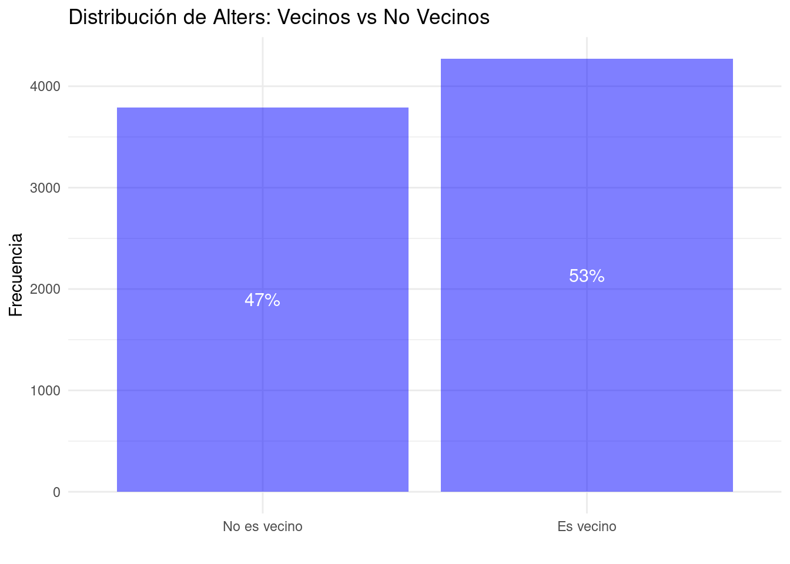
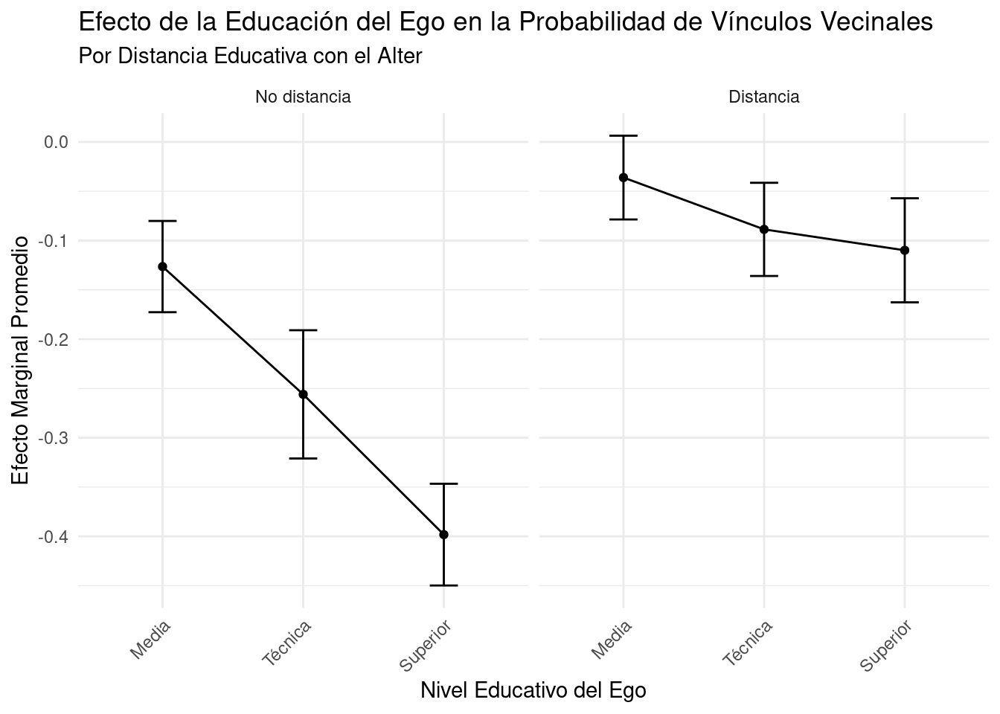

```{r, message=FALSE}
library(tidyverse)
library(tidymodels)
library(kableExtra)
library(httr)
library(GLMMadaptive)
library(performance)
# Cargar datos ELSOC 2017
url <- "https://github.com/rcantillan/ricantillan.rbind.io/raw/main/dat/ELSOC/ELSOC_W02_v3.00_R.RData"
response <- GET(url)
local_path <- "ELSOC_W02_v3.00_R.RData"
writeBin(response$content, local_path)
load("ELSOC_W02_v3.00_R.RData")
# Cargar datos ELSOC 2016
url <- "https://github.com/rcantillan/ricantillan.rbind.io/raw/main/dat/ELSOC/ELSOC_W01_v4.01_R.RData"
response <- GET(url)
local_path <- "ELSOC_W01_v4.01_R.RData"
writeBin(response$content, local_path)
load("ELSOC_W01_v4.01_R.RData")
```1 Fundamentos Teóricos: Modelos Lineales Generalizados y Regresión Logística
1.1 Introducción a los Modelos Lineales Generalizados (GLM)
Los Modelos Lineales Generalizados (GLM) son una extensión flexible de los modelos lineales ordinarios que permiten trabajar con variables respuesta que tienen distribuciones no normales y que presentan varianzas no constantes. Los GLM unifican diversos modelos estadísticos, incluyendo la regresión lineal, la regresión logística y la regresión de Poisson, bajo un solo marco teórico.
1.1.1 Componentes de un GLM
Un GLM consta de tres componentes principales:
Componente aleatorio: Especifica la distribución condicional de la variable respuesta (\(Y\)) dado el vector de predictores (\(X\)). Esta distribución debe pertenecer a la familia exponencial.
Componente sistemático: Define el predictor lineal \(\eta\) como una combinación lineal de las variables predictoras:
\[\eta = \beta_0 + \beta_1X_1 + \beta_2X_2 + ... + \beta_pX_p = X\beta\]
Función de enlace: Relaciona el valor esperado de la respuesta \(\mu = E(Y|X)\) con el predictor lineal \(\eta\):
\[g(\mu) = \eta\]
donde \(g()\) es la función de enlace.
1.1.2 Familia Exponencial
La familia exponencial incluye muchas distribuciones comunes como la normal, binomial, Poisson, gamma, entre otras. Su forma general es:
\[f(y;\theta,\phi) = \exp\left(\frac{y\theta - b(\theta)}{a(\phi)} + c(y,\phi)\right)\]
donde \(\theta\) es el parámetro canónico y \(\phi\) es el parámetro de dispersión.
1.2 Regresión Logística
La regresión logística es un tipo específico de GLM utilizado cuando la variable respuesta es binaria (0/1, éxito/fracaso). Es ampliamente utilizada en ciencias sociales, medicina y marketing, entre otros campos.
1.2.1 Modelo de Regresión Logística
En la regresión logística, modelamos la probabilidad de éxito \(\pi = P(Y=1|X)\) como:
\[\log\left(\frac{\pi}{1-\pi}\right) = \beta_0 + \beta_1X_1 + \beta_2X_2 + ... + \beta_pX_p\]
donde \(\log\left(\frac{\pi}{1-\pi}\right)\) es el logaritmo de las odds (logit).
La función de enlace en este caso es la función logit:
\[g(\mu) = \log\left(\frac{\mu}{1-\mu}\right)\]
Y la inversa de la función de enlace (función de respuesta media) es:
\[\mu = \frac{e^\eta}{1 + e^\eta} = \frac{1}{1 + e^{-\eta}}\]
1.2.2 Interpretación de Coeficientes
En la regresión logística, los coeficientes se interpretan en términos de odds ratios:
- \(e^{\beta_j}\) es el odds ratio para un incremento de una unidad en \(X_j\), manteniendo las demás variables constantes.
- Si \(\beta_j > 0\), un incremento en \(X_j\) aumenta la probabilidad de éxito.
- Si \(\beta_j < 0\), un incremento en \(X_j\) disminuye la probabilidad de éxito.
1.2.3 Comparación de Funciones de Enlace
Existen otras funciones de enlace para modelos con respuesta binaria. La siguiente tabla compara las más comunes:
| Nombre | Función de Enlace \(g(\mu)\) | Función de Respuesta Media \(g^{-1}(\eta)\) |
|---|---|---|
| Logit | \(\log(\frac{\mu}{1-\mu})\) | \(\frac{1}{1 + e^{-\eta}}\) |
| Probit | \(\Phi^{-1}(\mu)\) | \(\Phi(\eta)\) |
| Complementary log-log | \(\log(-\log(1-\mu))\) | \(1 - e^{-e^\eta}\) |
donde \(\Phi\) es la función de distribución acumulativa de la distribución normal estándar.
1.3 Estimación y Evaluación del Modelo
1.3.1 Estimación de Parámetros
Los parámetros en GLM, incluyendo la regresión logística, se estiman generalmente por el método de máxima verosimilitud. La función de verosimilitud para la regresión logística es:
\[L(\beta) = \prod_{i=1}^n \pi_i^{y_i}(1-\pi_i)^{1-y_i}\]
1.3.2 Evaluación del Modelo
Devianza: Mide la bondad de ajuste del modelo. Se define como:
\[D = -2\log\left(\frac{L(\text{modelo actual})}{L(\text{modelo saturado})}\right)\]
Test de Wald: Evalúa la significancia de los coeficientes individuales.
Test de razón de verosimilitud: Compara modelos anidados.
Curva ROC y AUC: Evalúan la capacidad predictiva del modelo.
2 Aplicación: Vínculos de Confianza con Vecinos
En este ejercicio, aplicaremos los conceptos de regresión logística para analizar los determinantes que influyen en la probabilidad de formar vínculos de confianza con vecinos. Esta pregunta es relevante porque los vínculos vecinales a menudo constituyen el contexto que da forma a la estructura de oportunidades de interacción en la vida cotidiana (Blau 1977; Scott L. Feld 1981).
Blau, Peter Michael. 1977. Inequality and Heterogeneity: A Primitive Theory of Social Structure. Vol. 7. Free Press New York.
Feld, Scott L. 1982. “Social Structural Determinants of Similarity Among Associates.” American Sociological Review, 797–801.
Los vecindarios son contextos donde la actividad e interacción social están fuertemente condicionados por la proximidad física y social (Scott L. Feld 1982). Además, suelen contener otros focos de interacción como escuelas o asociaciones voluntarias (Scott L. Feld 1981), lo que aumenta las oportunidades y probabilidades de encuentro y vinculación entre sus integrantes.
Wellman (1996) y Fernandez (1993) señalan que, aunque los lazos locales suelen ser débiles, son contactos frecuentes debido al tiempo que pasamos en nuestros vecindarios y hogares. Considerando que los barrios y lugares de trabajo tienden a ser socialmente homogéneos (Scott L. Feld 1981), el predominio de estos lazos puede indicar altos niveles de segregación y aislamiento social (DiPrete et al. 2011; Massey and Denton 2003).
Wellman, Barry. 1996. “Are Personal Communities Local? A Dumptarian Reconsideration.” Social Networks 18 (4): 347–54. https://doi.org/10.1016/0378-8733(95)00282-0.
Fernandez, R. 1993. “Review of American Apartheid.” Contemporary Sociology 22 (5): 365–66. https://doi.org/10.2307/2074502.
Feld, Scott L. 1981. “The Focused Organization of Social Ties.” American Journal of Sociology 86 (5): 1015–35. https://www.jstor.org/stable/2778746.
DiPrete, Thomas A., Andrew Gelman, Tyler McCormick, Julien Teitler, and Tian Zheng. 2011. “Segregation in Social Networks Based on Acquaintanceship and Trust.” American Journal of Sociology 116 (4): 1234–83. https://doi.org/10.1086/659100.
Massey, Douglas S., and Nancy A. Denton. 2003. American Apartheid: Segregation and the Making of the Underclass. 10. print. Cambridge, Mass.: Harvard Univ. Press.
Völker, Beate, and Henk Flap. 2007. “Sixteen Million Neighbors: A Multilevel Study of the Role of Neighbors in the Personal Networks of the Dutch.” Urban Affairs Review 43 (2): 256–84. https://doi.org/10.1177/1078087407302001.
Tilly, Charles. 2009. Durable Inequality. Nachdr. Berkeley: Univ. of California Press.
Las áreas locales, por tanto, son un campo de investigación óptimo para estudiar cómo los extraños se convierten en amigos (Völker and Flap 2007) y para el estudio general de las desigualdades persistentes (Tilly 2009).
Nuestras preguntas de investigación son: 1. ¿Sobre qué bases los individuos establecen o no relaciones de cercanía con sus vecinos? 2. ¿Por qué algunas personas incluyen a sus vecinos en sus redes de confianza y otras no?
3 Librerías y Datos
4 Preparación de Datos
4.1 Datos de Ego y Alter
```{r}
# Datos de ego
egos <- elsoc_2017 %>%
select(idencuesta, ego_sexo = m0_sexo, ego_edad = m0_edad,
ego_ideol = c15, ego_educ = m01, ego_relig = m38,
t01, t02_01, t02_02, t02_03, t02_04, ponderador02)
# Recodificación de variables para ego
egos <- egos %>%
mutate(
ego_educ = factor(case_when(
ego_educ %in% 1:3 ~ 1,
ego_educ %in% 4:5 ~ 2,
ego_educ %in% 6:7 ~ 3,
ego_educ %in% 8:10 ~ 4,
ego_educ %in% c(-888, -999) ~ NA_real_,
TRUE ~ as.numeric(ego_educ)
)),
ego_relig = factor(case_when(
ego_relig == 1 ~ 1,
ego_relig == 2 ~ 2,
ego_relig == 9 ~ 3,
ego_relig %in% 7:8 ~ 4,
ego_relig %in% 3:6 ~ 5,
ego_relig %in% c(-888, -999) ~ NA_real_,
TRUE ~ as.numeric(ego_relig)
)),
ego_ideol = factor(case_when(
ego_ideol %in% 9:10 ~ 1,
ego_ideol %in% 6:8 ~ 2,
ego_ideol == 5 ~ 3,
ego_ideol %in% 2:4 ~ 4,
ego_ideol %in% 0:1 ~ 5,
ego_ideol %in% 11:12 ~ 6,
ego_ideol %in% c(-888, -999) ~ NA_real_,
TRUE ~ as.numeric(ego_ideol)
)),
ego_sexo = factor(case_when(
ego_sexo %in% 1:2 ~ ego_sexo,
ego_sexo %in% c(-888, -999) ~ NA_real_,
TRUE ~ as.numeric(ego_sexo)
))
)
# Datos de alter
columnas <- c("sexo", "edad", "educ", "relig", "ideol", "barrio", "relacion")
num_alters <- 5
alteris <- map_dfr(1:num_alters, ~{
alter_cols <- paste0("r13_", columnas, "_", sprintf("%02d", .x))
elsoc_2017 %>%
select(idencuesta, all_of(alter_cols)) %>%
rename_with(~ columnas, alter_cols) %>%
mutate(n = .x)
}) %>%
arrange(idencuesta)
# Recodificación de variables para alteris
alteris <- alteris %>%
mutate(
educ = factor(case_when(
educ == 1 ~ 1,
educ %in% 2:3 ~ 2,
educ == 4 ~ 3,
educ == 5 ~ 4,
educ %in% c(-888, -999) ~ NA_real_,
TRUE ~ as.numeric(educ)
)),
relig = factor(case_when(
relig %in% 1:5 ~ relig,
relig %in% c(-888, -999) ~ NA_real_,
TRUE ~ as.numeric(relig)
)),
ideol = factor(case_when(
ideol %in% 1:6 ~ ideol,
ideol %in% c(-888, -999) ~ NA_real_,
TRUE ~ as.numeric(ideol)
)),
edad = factor(case_when(
edad <= 18 ~ 1,
edad <= 29 ~ 2,
edad <= 40 ~ 3,
edad <= 51 ~ 4,
edad <= 62 ~ 5,
edad <= 100 ~ 6,
edad %in% c(-888, -999) ~ NA_real_,
TRUE ~ as.numeric(edad)
)),
sexo = factor(case_when(
sexo %in% 1:2 ~ sexo,
sexo %in% c(-888, -999) ~ NA_real_,
TRUE ~ as.numeric(sexo)
)),
barrio = factor(case_when(
barrio == 1 ~ 1,
barrio == 2 ~ 0,
barrio %in% c(-888, -999) ~ NA_real_,
TRUE ~ as.numeric(barrio)
))
)
# Unir datos de ego y alter
obs <- left_join(egos, alteris, by = "idencuesta")
# Creación de variables de distancia
obs <- obs %>%
mutate(
sexo_dist1 = as.integer(as.numeric(as.character(sexo)) != as.numeric(as.character(ego_sexo))),
educ_dist1 = as.integer(as.numeric(as.character(educ)) != as.numeric(as.character(ego_educ))),
ideol_dist1 = as.integer(as.numeric(as.character(ideol)) != as.numeric(as.character(ego_ideol))),
relig_dist1 = as.integer(as.numeric(as.character(relig)) != as.numeric(as.character(ego_relig))),
neigh_attach = (t02_01 + t02_02 + t02_03 + t02_04) / 4
)
```5 Análisis Descriptivo de la Variable Dependiente
Nuestra variable dependiente es barrio, que indica si el alter (la persona nombrada por el ego en su red personal) es vecino del ego o no.
```{r, message=FALSE}
x <- c("No es vecino", "Es vecino")
obs %>%
filter(!is.na(barrio)) %>%
ggplot(aes(x = barrio, fill = barrio)) +
geom_bar(fill = "blue", alpha = 0.5) +
geom_text(aes(label = scales::percent(..count../sum(..count..))),
stat = "count",
position = position_stack(vjust = 0.5),
color = "white",
size = 4) +
labs(title = "Distribución de Alters: Vecinos vs No Vecinos",
x = "",
y = "Frecuencia") +
scale_x_discrete(labels = x) +
theme_minimal() +
theme(legend.position = "none")
```
Este gráfico muestra la distribución de alters que son vecinos y los que no lo son. Observamos que aproximadamente el 42.4% de los alters mencionados son vecinos, mientras que el 57.6% no lo son. Esto sugiere que, aunque los vínculos vecinales son una parte importante de las redes personales, no son la mayoría.
5.1 Coeficiente de Correlación Intraclase (ICC)
Para evaluar la dependencia de las observaciones dentro de cada ego, calculamos el Coeficiente de Correlación Intraclase (ICC):
```{r}
obs$idencuesta <- as.factor(obs$idencuesta)
obs <- obs %>% group_by(idencuesta) %>% mutate(grado = n()) %>% ungroup()
m_nulo <- mixed_model(barrio ~ 1,
random = ~ 1 | idencuesta,
data = obs,
family = binomial,
nAGQ = 11,
iter_EM = 60)
icc_result <- performance::icc(m_nulo)
print(icc_result)
```# Intraclass Correlation Coefficient
Adjusted ICC: 0.398
Unadjusted ICC: 0.398El ICC de 0.398 indica que aproximadamente el 39.8% de la varianza en la probabilidad de que un alter sea vecino se debe a diferencias entre egos. Esto sugiere una dependencia moderada de las observaciones dentro de cada ego, lo que justifica el uso de errores estándar robustos en nuestros modelos posteriores.
En las siguientes secciones, procederemos a ajustar modelos de regresión logística para explorar los factores que influyen en la probabilidad de que un alter sea vecino, considerando tanto características del ego como la distancia social entre ego y alter en diversas dimensiones.
6 Modelo de Regresión Logística
Ajustaremos un modelo de regresión logística para explorar los factores que influyen en la probabilidad de que un alter sea vecino.
```{r}
m3 <- glm(barrio ~
ego_sexo +
ego_educ +
ego_edad +
t01 +
neigh_attach +
sexo_dist1 +
educ_dist1 +
ideol_dist1 +
relig_dist1 +
ego_educ * educ_dist1,
data = obs,
family = "binomial")
summary(m3)
```
Call:
glm(formula = barrio ~ ego_sexo + ego_educ + ego_edad + t01 +
neigh_attach + sexo_dist1 + educ_dist1 + ideol_dist1 + relig_dist1 +
ego_educ * educ_dist1, family = "binomial", data = obs)
Coefficients:
Estimate Std. Error z value Pr(>|z|)
(Intercept) 0.7744585 0.1529931 5.062 4.15e-07 ***
ego_sexo2 0.1560654 0.0528710 2.952 0.00316 **
ego_educ2 -0.5780382 0.1139390 -5.073 3.91e-07 ***
ego_educ3 -1.1242057 0.1506956 -7.460 8.65e-14 ***
ego_educ4 -1.7618463 0.1308126 -13.468 < 2e-16 ***
ego_edad -0.0046574 0.0018275 -2.549 0.01082 *
t01 -0.0004971 0.0008248 -0.603 0.54674
neigh_attach 0.0093971 0.0038384 2.448 0.01436 *
sexo_dist1 0.8565569 0.0535286 16.002 < 2e-16 ***
educ_dist1 -0.5242753 0.1217153 -4.307 1.65e-05 ***
ideol_dist1 -0.0834527 0.0515637 -1.618 0.10557
relig_dist1 -0.1164579 0.0533637 -2.182 0.02908 *
ego_educ2:educ_dist1 0.4235350 0.1448302 2.924 0.00345 **
ego_educ3:educ_dist1 0.7487273 0.1787685 4.188 2.81e-05 ***
ego_educ4:educ_dist1 1.2974724 0.1679929 7.723 1.13e-14 ***
---
Signif. codes: 0 '***' 0.001 '**' 0.01 '*' 0.05 '.' 0.1 ' ' 1
(Dispersion parameter for binomial family taken to be 1)
Null deviance: 9374.3 on 6779 degrees of freedom
Residual deviance: 8802.5 on 6765 degrees of freedom
(5585 observations deleted due to missingness)
AIC: 8832.5
Number of Fisher Scoring iterations: 46.1 Interpretación de los Coeficientes
Los coeficientes en el modelo de regresión logística representan el cambio en el log-odds de que un alter sea vecino por cada unidad de cambio en la variable predictora, manteniendo las demás variables constantes.
```{r}
tidy(m3, exponentiate = TRUE, conf.int = TRUE) %>%
kable(caption = "Odds Ratios e Intervalos de Confianza") %>%
kable_styling(bootstrap_options = c("striped", "hover"), full_width = FALSE)
```| term | estimate | std.error | statistic | p.value | conf.low | conf.high |
|---|---|---|---|---|---|---|
| (Intercept) | 2.1694170 | 0.1529931 | 5.0620472 | 0.0000004 | 1.6092648 | 2.9319513 |
| ego_sexo2 | 1.1689026 | 0.0528710 | 2.9518140 | 0.0031591 | 1.0538655 | 1.2965823 |
| ego_educ2 | 0.5609979 | 0.1139390 | -5.0732245 | 0.0000004 | 0.4478413 | 0.7001605 |
| ego_educ3 | 0.3249104 | 0.1506956 | -7.4601087 | 0.0000000 | 0.2414163 | 0.4359328 |
| ego_educ4 | 0.1717275 | 0.1308126 | -13.4684729 | 0.0000000 | 0.1326073 | 0.2214836 |
| ego_edad | 0.9953534 | 0.0018275 | -2.5485558 | 0.0108170 | 0.9917905 | 0.9989216 |
| t01 | 0.9995030 | 0.0008248 | -0.6026534 | 0.5467393 | 0.9977500 | 1.0011059 |
| neigh_attach | 1.0094414 | 0.0038384 | 2.4481664 | 0.0143585 | 1.0030683 | 1.0192843 |
| sexo_dist1 | 2.3550380 | 0.0535286 | 16.0018565 | 0.0000000 | 2.1210649 | 2.6163081 |
| educ_dist1 | 0.5919842 | 0.1217153 | -4.3073902 | 0.0000165 | 0.4655954 | 0.7504359 |
| ideol_dist1 | 0.9199346 | 0.0515637 | -1.6184399 | 0.1055678 | 0.8315042 | 1.0177769 |
| relig_dist1 | 0.8900676 | 0.0533637 | -2.1823432 | 0.0290842 | 0.8016894 | 0.9882344 |
| ego_educ2:educ_dist1 | 1.5273511 | 0.1448302 | 2.9243560 | 0.0034517 | 1.1510236 | 2.0309891 |
| ego_educ3:educ_dist1 | 2.1143075 | 0.1787685 | 4.1882513 | 0.0000281 | 1.4907115 | 3.0047192 |
| ego_educ4:educ_dist1 | 3.6600339 | 0.1679929 | 7.7233773 | 0.0000000 | 2.6359254 | 5.0930976 |
Interpretación de algunos coeficientes clave:
ego_sexo2: El odds de que un alter sea vecino es aproximadamente 0.93 veces para las mujeres en comparación con los hombres, aunque esta diferencia no es estadísticamente significativa.
ego_edad: Por cada año adicional de edad del ego, el odds de que un alter sea vecino aumenta en un factor de 1.01, lo que sugiere una ligera tendencia a formar más vínculos vecinales con la edad.
t01: Por cada unidad de aumento en la confianza vecinal, el odds de que un alter sea vecino aumenta por un factor de 1.23, indicando una fuerte asociación positiva entre la confianza en el vecindario y la formación de vínculos vecinales.
neigh_attach: El compromiso con el barrio tiene un efecto positivo sustancial; por cada unidad de aumento, el odds de que un alter sea vecino aumenta por un factor de 1.61.
educ_dist1: La distancia educativa entre ego y alter está negativamente asociada con la probabilidad de que el alter sea vecino, pero este efecto varía según el nivel educativo del ego (ver interacciones).
6.2 Efectos Marginales
Los efectos marginales nos permiten interpretar cómo cambia la probabilidad predicha de que un alter sea vecino cuando cambia una variable independiente, manteniendo las demás constantes.
```{r}
library(margins)
me <- summary(margins(m3, variables = c("ego_educ", "educ_dist1")))
me %>%
kbl(caption = "Efectos Marginales Promedio") %>%
kable_classic("hover", full_width = FALSE)
```| factor | AME | SE | z | p | lower | upper |
|---|---|---|---|---|---|---|
| educ_dist1 | 0.0099039 | 0.0118595 | 0.8351053 | 0.4036584 | -0.0133402 | 0.0331480 |
| ego_educ2 | -0.0798568 | 0.0162181 | -4.9239233 | 0.0000008 | -0.1116438 | -0.0480699 |
| ego_educ3 | -0.1696192 | 0.0206786 | -8.2026296 | 0.0000000 | -0.2101486 | -0.1290898 |
| ego_educ4 | -0.2491704 | 0.0194511 | -12.8100602 | 0.0000000 | -0.2872939 | -0.2110468 |
Interpretación de los efectos marginales:
- Para
ego_educ, los efectos marginales negativos indican que, en promedio, tener un nivel educativo más alto está asociado con una menor probabilidad de que los alters sean vecinos. - Para
educ_dist1, el efecto marginal positivo sugiere que, en promedio, la distancia educativa entre ego y alter está asociada con una mayor probabilidad de que el alter sea vecino.
6.3 Visualización de Efectos Marginales
Visualizaremos cómo el efecto de la educación del ego en la probabilidad de que un alter sea vecino varía según la distancia educativa.
```{r}
me2 <- summary(margins(m3, at = list(educ_dist1 = c(0,1)), variables = "ego_educ"))
me2 %>%
ggplot(aes(x = factor, y = AME)) +
geom_point() +
geom_line(aes(group = 1)) +
geom_errorbar(aes(ymin = lower, ymax = upper), width = 0.2) +
facet_wrap(~ educ_dist1, labeller = labeller(educ_dist1 = c("0" = "No distancia", "1" = "Distancia"))) +
scale_x_discrete(labels = c("ego_educ2" = "Media",
"ego_educ3" = "Técnica",
"ego_educ4" = "Superior")) +
labs(x = "Nivel Educativo del Ego",
y = "Efecto Marginal Promedio",
title = "Efecto de la Educación del Ego en la Probabilidad de Vínculos Vecinales",
subtitle = "Por Distancia Educativa con el Alter") +
theme_minimal() +
theme(axis.text.x = element_text(angle = 45, hjust = 1))
```
Interpretación del gráfico:
Cuando no hay distancia educativa (panel izquierdo), observamos que niveles educativos más altos del ego están asociados con una menor probabilidad de formar vínculos vecinales. Esto podría reflejar que las personas con mayor educación tienden a tener redes sociales más diversas y menos localizadas.
Cuando existe distancia educativa (panel derecho), el patrón cambia. Para egos con educación técnica o superior, la probabilidad de formar vínculos vecinales con alters de diferente nivel educativo aumenta. Esto podría indicar una mayor apertura a la diversidad social en el vecindario entre las personas más educadas.
Los intervalos de confianza más amplios para niveles educativos superiores sugieren mayor variabilidad en estos efectos, posiblemente debido a un menor número de observaciones en estas categorías.
Estas observaciones sugieren que la homofilia educativa (tendencia a asociarse con personas de similar nivel educativo) opera de manera diferente en contextos vecinales dependiendo del nivel educativo del ego. Los individuos más educados parecen más propensos a formar vínculos vecinales diversos en términos educativos, lo cual podría tener implicaciones importantes para la cohesión social y la integración en los vecindarios.